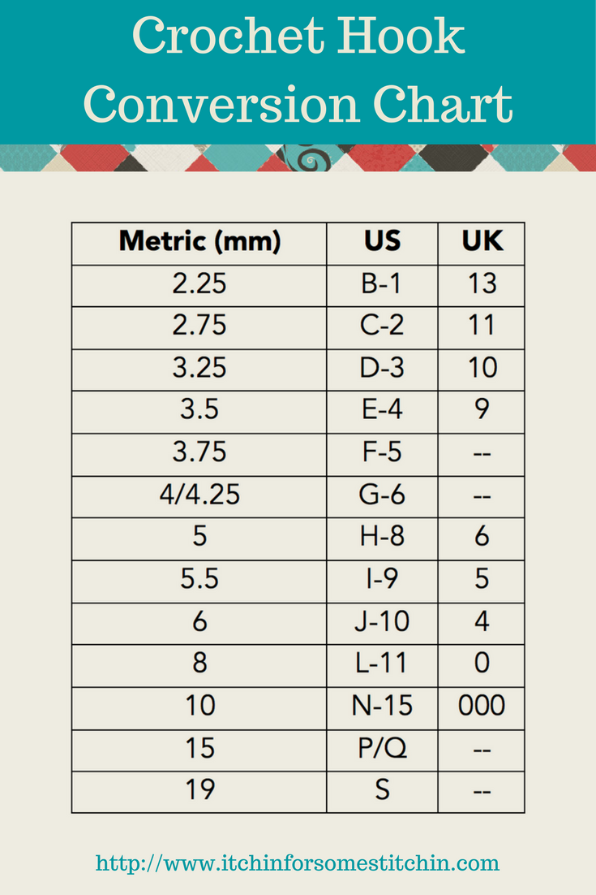
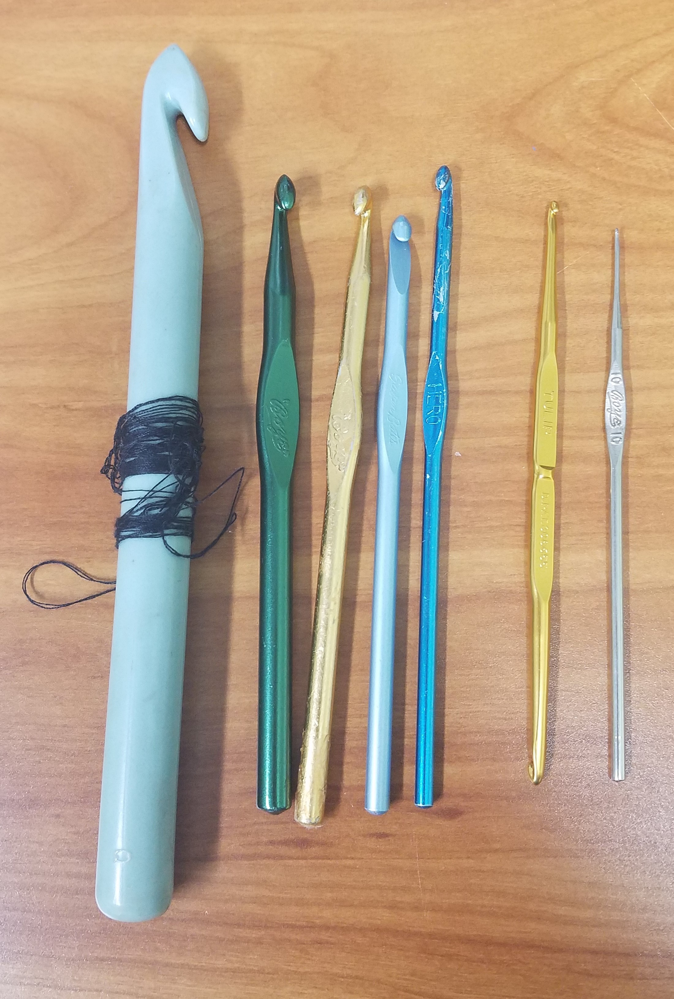
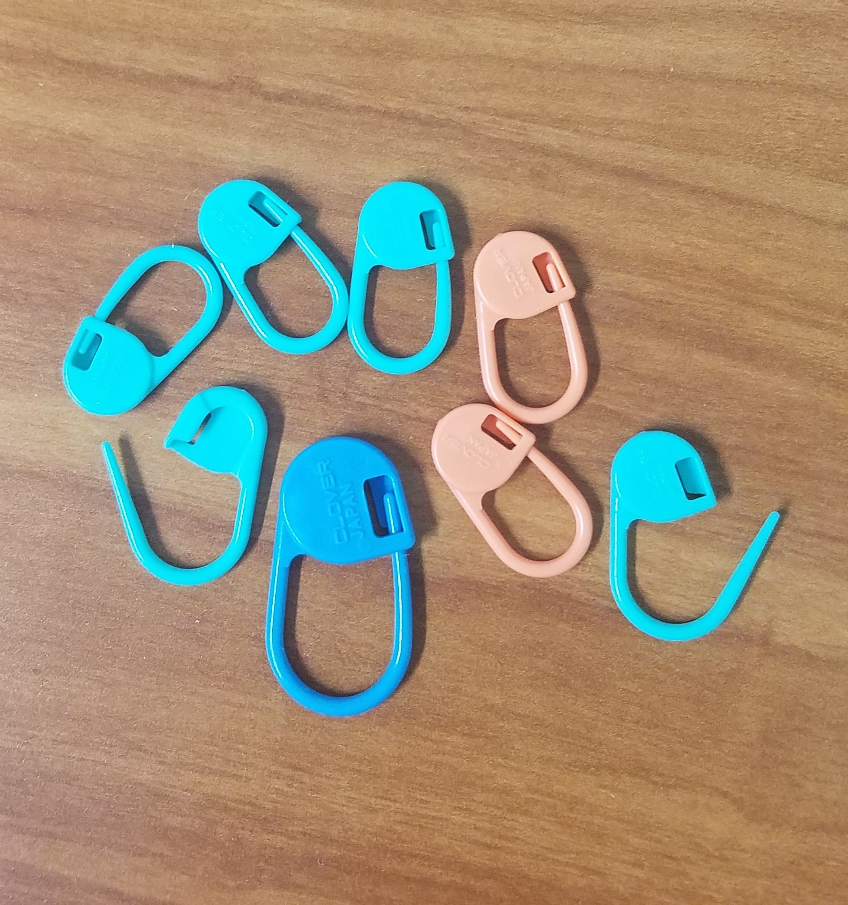
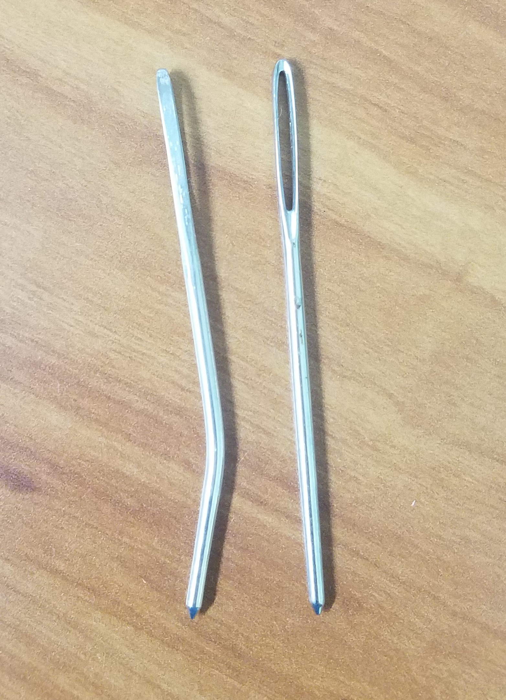

Let's Learn!
Basic Tools
Crochet involves the use of hooks and they come in many sizes. Each size will create a different gauge, length of stitch, and your piece will become bigger or smaller as a result.
Here's a chart
Here are some examples of hooks, my prefered hook is Hook I.
These are stitch markers. They help keep track where you started so you don't get lost while crocheting.
These are crochet needles. They are meant for sewing yarn in between your stitches.
Stitches
Single Crochet Stitches
The most basic stitch and is most frequently used.
Double Crochet Stitches
The second known stitch. It is taller and softer than the single crochet.
Tips & Tricks
Here are some neat tips and tricks to make crochet a little cooler and efficient.